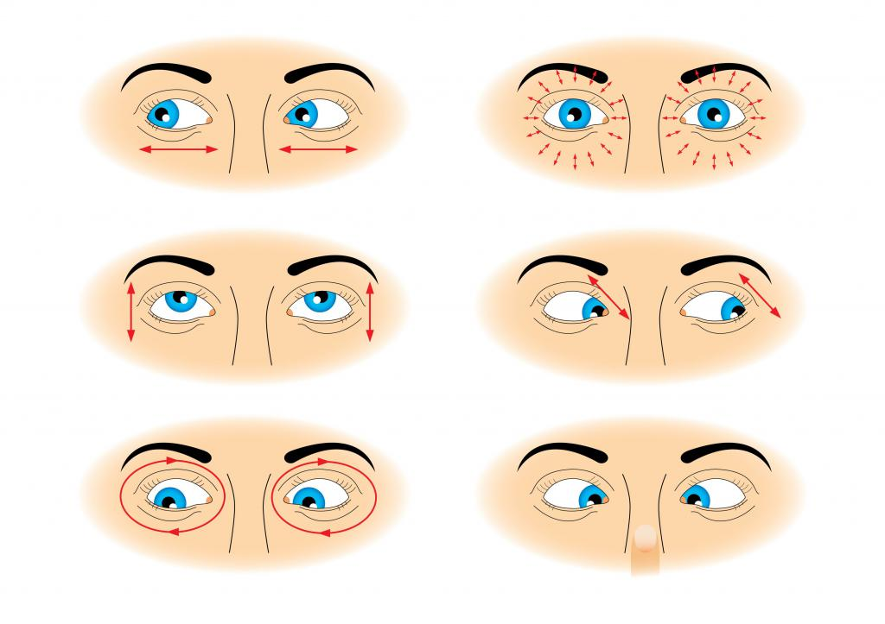

Профессор Жданов: восстановление зрения.
Методика, полный комплекс упражнений для восстановления зрения
Зрение относится к одной из ценнейших способностей человека, которым его наделяет природа.
Однако с годами происходит так, что окружающий нас мир начинает выглядеть не так уж и четко, как это было ранее.
Зрение начинает ухудшаться, принося не только множество неудобств, но и делая нас беспомощными и уязвимыми.
Все это воспринимается человеком довольно болезненно, заставляя обратиться к окулисту.
Какие же рекомендации при этом дает традиционная медицина? Для коррекции и восстановления зрения она предлагает пациенту использовать специальную оптику,
а в случае крайней необходимости проводит оперативное вмешательство.
Ведь медики считают зрение тонким и чувствительным инструментом, устранять проблемы которого можно только с помощью квалифицированных специалистов.
Исходя из этой точки зрения различные уникальные методики можно рассматривать как несостоятельные.
Однако порой помочь больному устранить офтальмологическую болезнь не способны ни оптические изделия, ни медицинские операции.
Существует также и определенная категория людей, опасающихся стандартных подходов к лечению, таких как хирургическое вмешательство и использование лазера.
В таких случаях последней надеждой пациентов становятся различные способы, в числе которых восстановление зрения по методу Жданова.
Немного об авторе
Разработавший комплекс для восстановления зрения профессор Жданов Владимир Георгиевич -
психолог и физик. Этот человек является активным противником всех вредных привычек,
занимая при этом должность вице-президента Международной Академии Трезвости,
возглавляя «Союз борьбы за трезвость», а также Международную ассоциацию психоаналитиков.
Благодаря разработанному Ждановым комплексу восстановления зрения на сегодняшний день к полноценной жизни уже смогла вернуться не одна тысяча людей.
Кстати, Владимир Георгиевич относит к вредным привычкам и ношение очков. Он постоянно указывает на их безрезультативность для осуществления процесса нормализации зрения.
Проводимые им эксперименты и наблюдения подтвердили это. По мнению Владимира Жданова, восстановление зрения при длительном ношении очков становится практически невозможным.
Подобное он объясняет тем, что оптические приборы в значительной степени расслабляют глазные мышцы.
Последние при этом просто перестают нормально функционировать.
В. Г. Жданов хорошо известен и своими увлекательнейшими лекциями, которые он читает не только в Москве, но и в других городах страны.
Во время их проведения профессор пропагандирует здоровый образ жизни.
Помимо этого, Владимир Георгиевич часто является гостем различных передач и участвует в форумах, посвященных этой теме.
Однако самую большую известность принес Жданову полный комплекс упражнений для восстановления зрения, в основе которого лежат специальные разминочные занятия для глаз.
Основы методики
По утверждению профессора Жданова, полное восстановление зрения под силу каждому, кто готов потратить на это время и приложить необходимые усилия.
Стоит отметить, что Владимира Георгиевича нельзя назвать единственным автором теоретической и практической части методики, которая носит его имя.
Однако благодаря усилиям именно этого человека данный способ обрел наибольшую популярность.
Полное восстановление зрения по Жданову – это безоперационная методика, дополненная рядом важных и полезных моментов, без которых ее можно рассматривать только как гимнастику для глаз.
Основу данной теории составляет утверждение Уильяма Бейтса (американского офтальмолога), согласно которому зрение человека ухудшается вовсе не из-за дефектов хрусталика.
Подобное происходит в результате дисфункции шести мышц, находящихся в глазном яблоке. Однако стоит отметить, что те упражнения,
которые еще в начале прошлого века были разработаны Бейтсом, Ждановым были улучшены и дополнены.
Помимо этого, российский ученый дал обоснование своему методу. Он назвал его не медицинским вмешательством, а «педагогическим» подходом,
предполагающим проведение пациентом определенной психологической работы. Методика Жданова по восстановлению зрения является комбинацией теории Бейтса, а также тех достижений,
которых достиг в психоаналитике Г. А. Шичко.
Причем, по утверждению Владимира Георгиевича, человеку первоначально понадобится исправить состояние своей тонкой сферы, а уж после браться за физиологию.
Жданов указал на то, что такое состояние, когда глаза человека начинают видеть хуже, является не только дискомфортным.
По ряду причин его можно считать и опасным. Например, при дальнозоркости или близорукости мышцам органа зрения приходится постоянно находиться в напряжении.
Ведь только это обеспечит создание нормального фокуса для получения более четкой картинки. Но при этом подобное состояние быстро истощает ресурс мышц.
Чем еще вредно постоянное напряжение наших глаз? Оно приводит к кислородному голоданию мышц.
В таком случае кровеносным сосудам становится намного сложнее транспортировать этот нужный элемент к органам зрения.
Помимо этого, близорукость со временем приводит к тому, что глаза начинают приобретать вытянутую форму.
Это является причиной изменений в сетчатке. Она деформируется из-за постоянного напряжения.
Любое офтальмологическое заболевание приводит к нарушению структуры глазного яблока. В результате этот сложный оптический орган перестает нормально выполнять возложенные на
него функции, что приводит к развитию более серьезных недугов. Самым опасным нарушением является близорукость. Порой из-за возникновения непрерывных и больших нагрузок происходит
отслоение сетчатки. Разумеется, многие люди, которые начинают хуже видеть, приобретают очки. Однако, как указывает В. Г. Жданов, в восстановлении зрения консервативные подходы
применять не стоит. Ведь многими учеными доказан вред очков. Так, при их ношении люди, как правило, не поворачивают глазное яблоко. Они чаще вертят головой, чтобы посмотреть
на предметы, находящиеся сбоку от них. Это связано с тем, что периферийные участки линз не позволяют получить такое же хорошее изображение, как их центральная часть.
При этом мышцы глаз постепенно привыкают к такому подспорью, как очки. И это со временем приводит к тому, что они атрофируются. Зрение при этом можно потерять совсем.
После длительного ношения очков глаза становятся беспомощными. И если до приобретения оптики человек еще мог сфокусировать свой взгляд,
то после сделать это он будет уже не в состоянии.
Очень многих людей пугают эти последствия. Однако еще больший страх они испытывают перед операцией, предпочитая выбирать «наименьшее зло».
Таким людям предлагает свою методику профессор Жданов. Восстановление зрения с использованием его упражнений исключает проведение любого хирургического вмешательства.
Основное, что при этом потребуется от пациента – отказаться от очков, оптимистично настроиться и выполнять тот комплекс упражнений, который был разработан Владимиром Георгиевичем.
Противоказания
Комплекс упражнений восстановления зрения по Жданову представляет собой коррекцию, во время которой не используются картинки.
Все занятия проводятся только на основе данных автором рекомендаций. Однако выполнять подобный комплекс могут не все. Существуют некоторые противопоказания,
на которые обязательно нужно обратить внимание.
Так, категорически запрещено выполнение упражнений при следующем:
- отслоении сетчатки;
- нахождении человека в реабилитационном периоде после проведения хирургического вмешательства на глаза;
- угрозе отслоения сетчатки.
Условия эффективности
При разработке своей методики по восстановлению зрения Жданов сделал основной упор на то, что успех таких занятий будет на 50% зависеть от профилактики.
А это потребует от человека соблюдения трех очень важных правил:
- глаза должны как можно чаще смотреть на солнечный свет;
- при имеющейся возможности лучше не пользоваться очками или линзами, которые, как правило, играют роль своеобразных костылей, не исправляя при этом имеющиеся дефекты;
- глаза должны периодически отдыхать даже во время очень срочной работы.
Успех восстановления зрения кроется в упорной работе, а также в выполнении специальных упражнений.
Помимо специальной гимнастики методика Жданова предполагает ведение дневника.
В нем человек должен делать записи о том, что он желает получить.
Подобное самовнушение позволяет пациенту запрограммировать себя на получение хорошего результата.
Эффективность применения метода Жданова по восстановлению зрения будет зависеть от следующего:
- Внушаемости. Если ее уровень низок, то вероятность улучшения зрения при его функциональном нарушении снижается.
- Диагноза. В тех случаях, когда человек стал видеть плохо из-за стрессов, а строение глаза при этом не изменилось, методика станет достаточно эффективной.
- Регулярные выполнения упражнений и желание. Хорошего результата можно добиться только в том случае, когда человеком будут направлены все усилия на выполнение гимнастики для глаз, а записи в дневнике станут делаться регулярно.
Методика восстановление зрения по Жданову будет эффективной в том случае, когда человек сможет полностью отказаться от очков или контактных линз.
При отсутствии такой возможности оптику следует поменять на более слабую. Таким образом, работа глазодвигательных мышц будет активизирована.
По утверждению Жданова, полное восстановление зрения возможно, если у человека имеется желание, и он поставил перед собой конкретную цель.
Эффект в этом случае будет значительным, но не стоит ожидать его уже спустя пару недель или месяцев. Главное - не терять веру в себя и в собственные силы.
Правила проведения занятий
Выполнение комплекса упражнений Жданова по восстановлению зрения основано на следующих принципах:
- Регулярность. Выполнять комплекс упражнений рекомендуется трижды в день по 10 минут. Это будет намного эффективнее, чем однократно проведенное занятие, пусть даже в течение 30 мин.
- Постепенное наращивание интенсивности. На начальных этапах проведения занятий рекомендовано выполнение комплекса из 6 упражнений. Ежедневно следует добавлять от 1 до 2 движений.
- Слаженное и плавное выполнение манипуляций. При выполнении упражнений Жданова по полному восстановлению зрения человек не должен перенапрягаться и делать резкие движения.
- Позитивный настрой на хороший результат. Для соблюдения данного принципа следует постараться думать только о приятном. Можно представить себе любые уже пережитые радостные события. На создание положительного настроя работает и метод Шичко. Он предусматривает написание в вечернее время, непосредственно перед сном, определенных жизнеутверждающих фраз, в которых говорится о том, что завтра зрение пациента станет еще лучше, и он перестанет носить очки.
Общий механизм упражнений для восстановления зрения профессора Жданова направлен на чередование в глазных мышцах напряжения и расслабления.
Методика профессора Жданова по восстановлению зрения предназначена для людей, страдающих от:
- дальнозоркости;
- астигматизма;
- близорукости;
- косоглазия.
Кроме того, проведение подобных занятий будет весьма полезно тем, у кого во время работы происходит перенапряжение глаз.
Упражнения помогут расслабить мышцы органов зрения и укрепят их. В результате глаза смогут выдерживать большие нагрузки.
Полный комплекс восстановления зрения Жданова включает в себя несколько разделов.
Каждый из них способен получить определенные эффекты, такие как тренировка и расслабление мышц.
Рассмотрим каждый из разделов методики Жданова по восстановлению зрения подробнее.
Это упражнение проводится в том случае, когда имеется естественный источник света, которым может быть либо солнце, либо свеча. Как проводится соляризация?
Для выполнения этого упражнения руки должны быть расслаблены, а ноги поставлены на ширине плеч. Лицо следует повернуть к солнцу. Выполняют упражнения днем или в вечерние часы.
Главное, чтобы источник света не был над головой. Процедура соляризации проводится медленно. Человек должен поднять левую пятку и повернуться вправо.
Источник света при этом находится слева. Затем по этой же траектории необходимо вернуться в исходное положение. После этого следует повернуться влево.
Выполнять повороты следует от 20 раз до тех пор, пока в глазах не появятся 4 или 5 «зайчиков» (интенсивных вспышек). Подобное явление будет свидетельствовать о том, что сетчатка достигла своей максимальной активизации.
При выполнении упражнения со свечой в комнате необходимо выключить свет или занавесить окна.
В метре от этого источника света следует поставить стул и сесть на него. При выполнении упражнения человек должен поворачивать голову влево и вправо.
На пламени взгляд задерживать не следует.
Это упражнение выполняется сразу после соляризации с подключением к работе ладоней. Пальминг делают, когда солнце или другой источник света находится за спиной.
Ладони при этом разогревают с помощью растирания, а после прикладывают их к закрытым глазам как можно плотнее. Пальцы рук должны быть скрещены перпендикулярно,
а нос необходимо расположить между мизинцами.
Глаза при пальминге находятся напротив впадин ладоней, что позволит их открывать и закрывать без особого труда.
Для проведения процедуры человек должен расслабиться и положительно настроиться.
Лучше всего, если он при этом будет сидеть, расположив локти на столе.
Важным моментом является создание положительного образа. Человеку предлагается представлять себе, как его глаза становятся красивее.
Вглядываясь при пальминге в темноту, следует воображать что-либо, что приносит умиротворение, счастье и удовольствие.
Длиться упражнение должно до тех пор, пока глаза не расслабятся и в них не исчезнут световые зайчики.
Это упражнение предполагает проведение визуализации.
Для его выполнения человек должен представить себе бабочку, сидящую на потолке.
После этого ей нужно задать траекторию полета. Так, бабочка с потолка начинает движение к бровям человека, который, не отрываясь,
следит за ней. После этого она оказывается на стене. Далее она, взлетев, садится человеку на нос.
Во время третьего движения траектория бабочки начинается с пола и направлена к нижней губе. После этого следует поморгать глазами и повторить все еще 6 раз.
Описанные выше траектории движения глаз должны быть выполнены на протяжении одного занятия, а не в качестве отдельных упражнений.
В основе этого упражнения находится рассмотрение предметов. Выполнять центральную фиксацию можно как дома, так и в любом другом месте.
Так, находясь в своем жилище, следует подойти к окну и выбрать один из удаленных предметов. Им может быть, например, дерево.
На этот объект следует начинать смотреть более пристально. После этого на дереве необходимо выделить отдельную ветку и начать рассматривать ее.
Далее перевести взгляд на один из листочков.
Выполнять это упражнение можно и на улице, рассматривая, например, толпу, стоящую на остановке.
После взгляда на всех людей понадобится выделить конкретного человека. Далее следует внимательно рассматривать его куртку,
пиджак, кофту или рубашку. После этого стоит отметить одну из деталей верхней одежды и начать вглядываться в нее.
Еще одним способом выполнения этого упражнения является просмотр страницы книги, затем - находящегося на ней текста, а после - отдельной строки, слова и буквы.
Описанные выше способы являются своеобразным разогревом, во время которого происходит расслабление глазных мышц.
Следующим этапом является направление их на работу в нужном темпе.

Гимнастика, разработанная Ждановым, способствует тренировке мышц, которые отвечают за двигательную способность органов зрения.
На начальном этапе необходимо легко и быстро моргать веками,
не напрягая и не зажмуривая глаза. Далее следует комплекс упражнений, выполнять которые важно в указанной автором последовательности.
- Взгляд следует поднять максимально вверх, а затем опустить его как можно ниже. Повторить движения следует 5 раз.
- Перемещение взгляда производится с максимальной амплитудой влево и вправо.
- Движение глазами осуществляется по диагонали. Это направление вверх-вправо, затем вниз-влево, а после этого вверх-влево и вниз-вправо.
- Следующее упражнение является более сложным. Оно представляет собой комбинацию из трех предыдущих. При его выполнении человек должен обрисовать в воздухе прямоугольник, имеющий максимальный размер. Начать можно с любого угла и идти в любом направлении. Так, первая точка воображаемого прямоугольника может находиться вверху слева. После этого взгляд следует переместить вверх и вправо, опустить в нижний правый угол, провести воображаемую горизонтальную линию и вернуться в исходное положение. После этого вычерчивание фигуры следует произвести в обратном направлении.
- Рисование круга. Принцип тот же, что и при изображении воображаемого прямоугольника.
- Рисование «змеек». Взгляд при этом должен перемещаться в направлении с лева направо, совершая одновременно движения вверх и вниз. После этого «змейку» следует нарисовать в обратном направлении.
- Изображение спирали. Начать следует с маленького круга, а затем расширять его по часовой стрелке до тех пор, пока взгляд не наткнется на потолок, пол и боковые стены. После этого направления движения необходимо изменить.
- Воображаемая обмотка. Для выполнения следующего упражнения необходимо представить себе, что перед глазами находится стеклянная труба. Ее следует расположить вертикально и начать обматывать воображаемой веревкой. После пяти витков трубу мысленно располагают горизонтально, проделывая с ней то же самое.
- «Глобус». При выполнении этого упражнения взгляд должен скользить по воображаемому экватору вначале по часовой стрелке, а далее - против нее.
После проведения каждого упражнения следует быстро поморгать, и только после этого приступать к следующему.
В завершении гимнастического комплекса в течение пяти минут выполняется пальминг.
Упражнения для глаз для восстановления зрения Жданов Владимир Георгиевич рекомендует выполнять ежедневно по 3 раза.